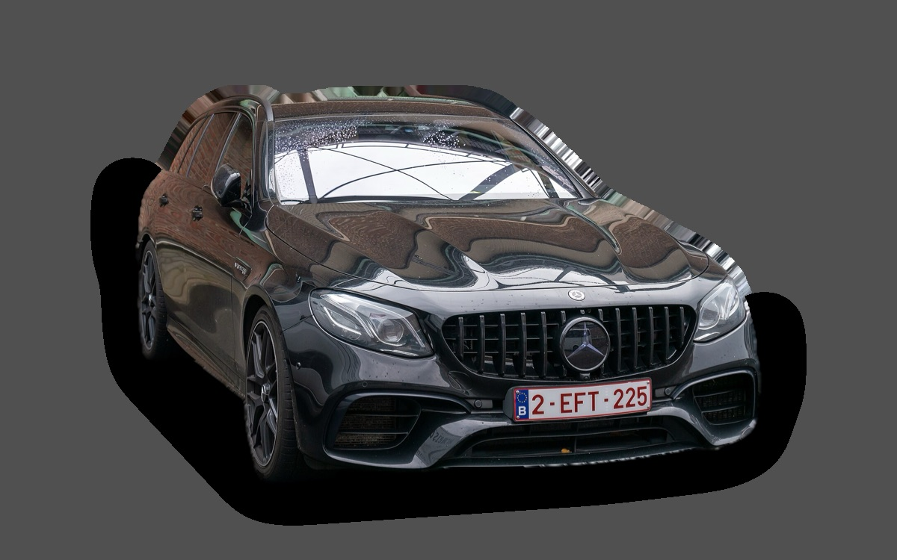

Vad kostar en Mercedes-Benz E-klass Kombi W213 per månad?
En Mercedes-Benz E-klass Kombi W213 från 2020 kostar cirka 5 048 kr i månaden, allt inräknat.
5 048 krper månad, årsmodell 2020
234 000 krpris, årsmodell 2020
512 900 krsenaste nypris
Aprisvärdhetsbetyg (2020)

.jpg){kind=link}
Månadskostnad per årsmodell
| Årsmodell | Version i beräkningen | Pris | Per månad | Betyg |
|---|---|---|---|---|
| 2023 | E 220 d 4MATIC, Avantgarde | 358 000 kr | 6 116 kr | B |
| 2020 | E 220 d 4MATIC, Avantgarde | 234 000 kr | 5 048 kr | A |
| 2017 | E 220 d 4MATIC, Avantgarde | 165 000 kr | 4 611 kr | A |
Räknat på 5 års ägande och 1 250 mil per år, med bränslepriser från 2026-10-22. Månadskostnaden innehåller värdeminskning, drivmedel, service och reparationer, försäkring och fordonsskatt.
Så fördelas kostnaden för en 2020:a
- Värdeminskning: 1 709 kr/mån
- Drivmedel: 1 602 kr/mån
- Service och reparationer: 1 017 kr/mån
- Försäkring: 434 kr/mån
- Fordonsskatt: 287 kr/mån
Begagnatpriser i annonser
| Årsmodell | Medianpris | Annonser | Typiskt miltal |
|---|---|---|---|
| 2023 | 389 000 kr | 32 | 8 800 mil |
| 2022 | 359 900 kr | 20 | 11 000 mil |
| 2021 | 319 000 kr | 59 | 13 200 mil |
| 2020 | 275 000 kr | 31 | 16 300 mil |
| 2019 | 249 500 kr | 19 | 17 000 mil |
| 2018 | 172 200 kr | 24 | 30 800 mil |
| 2017 | 158 400 kr | 12 | 27 600 mil |
| 2016 | 112 000 kr | 23 | 29 600 mil |
Medianpriset i svenska annonser per årsmodell i oktober 2026 (källa: Blocket). Annonspriser är utgångspriser, och slutpriset kan bli lägre.
Motorer och versioner
| Motor | Drivmedel | Effekt | 0–100 km/h | Förbrukning (WLTP) | Räckvidd | Årsmodeller | Pristillägg |
|---|---|---|---|---|---|---|---|
| E 220 d 4MATIC | Diesel | 194 hk | 7,8 s | 5,6 l/100 km | – | 2016–2023 | – |
| E 300 e laddhybrid 320 | Laddhybrid | 320 hk | 6,3 s | 1,8 l/100 km + 18 kWh/100 km | – | 2021–2023 | +40 000 kr |
| AMG E 53 4MATIC+ | Bensin | 435 hk | 4,6 s | 9,2 l/100 km | – | 2016–2023 | +300 000 kr |
- Utrustning: Avantgarde, AMG Line (+40 000 kr)
Fakta
- Kaross
- Kombi
- Årsmodeller
- 2016–2023
- Senaste nypris
- 512 900 kr
- Bagage
- 640 liter
- Euro NCAP
- 5 av 5 stjärnor
- Nybilsgaranti
- 3 år
- Driftsäkerhet
- 4 av 5
- Helförsäkring, uppskattning
- 9 000 kr/år
- Service, uppskattning
- 6 000 kr/år
Vanliga fel att ha koll på
- Automatlåda 9G-Tronic: ventilhus och läckage, reparation cirka 5 500 kr
- AdBlue-system och NOx-givare (diesel), reparation cirka 6 000 kr
- AIRMATIC luftfjädring (om bilen har det), reparation cirka 8 000 kr
- Länkarmar och bussningar, reparation cirka 6 000 kr
- 48-voltssystem och startgenerator, reparation cirka 20 000 kr
Felen gäller vissa motorer och årsmodeller. I kalkylatorn räknas risken för just den version du väljer.
Fördelar och nackdelar
Fördel
Mycket bekväm och rymlig, och billigare begagnad än nya E-klass.
Nackdel
Dyr service, och tillverkas inte längre i den här generationen.
Liknande bilar
 Subaru Outback4 873 kr/mån som 2023:a
Subaru Outback4 873 kr/mån som 2023:a BMW 5-serie Touring4 773 kr/mån som 2020:a
BMW 5-serie Touring4 773 kr/mån som 2020:a Volvo V604 458 kr/mån som 2023:a
Volvo V604 458 kr/mån som 2023:a Volvo V904 449 kr/mån som 2022:a
Volvo V904 449 kr/mån som 2022:a Volkswagen ID. Buzz4 376 kr/mån som 2023:a
Volkswagen ID. Buzz4 376 kr/mån som 2023:a Volkswagen Touran4 267 kr/mån som 2022:a
Volkswagen Touran4 267 kr/mån som 2022:a
Uppdaterad 2026-10-27 · annonsdata okt 2026